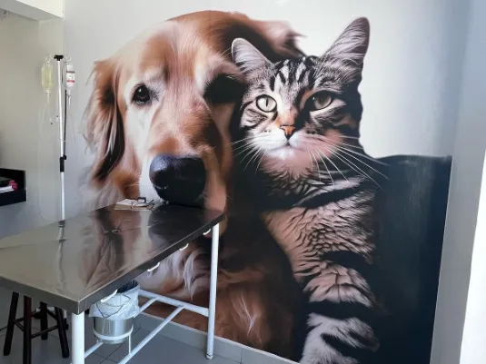

Consultas e vacinas
Seu pet não é apenas um animal de estimação. É companhia, carinho, alegria e parte da sua família. Nas consultas, a equipe cuida da saúde dele com calma, e as vacinas e os cuidados preventivos ficam em dia no mesmo lugar.
- Consultas veterinárias para cães e gatos
- Vacinas e cuidados preventivos
- Atendimento humanizado e com carinho
Agendar consulta no WhatsApp“Só levo meus cães na Semevet, sempre foram muito bem atendidos, não apenas com carinho, mas também com excelência, qualidade e doutores capacitados!”